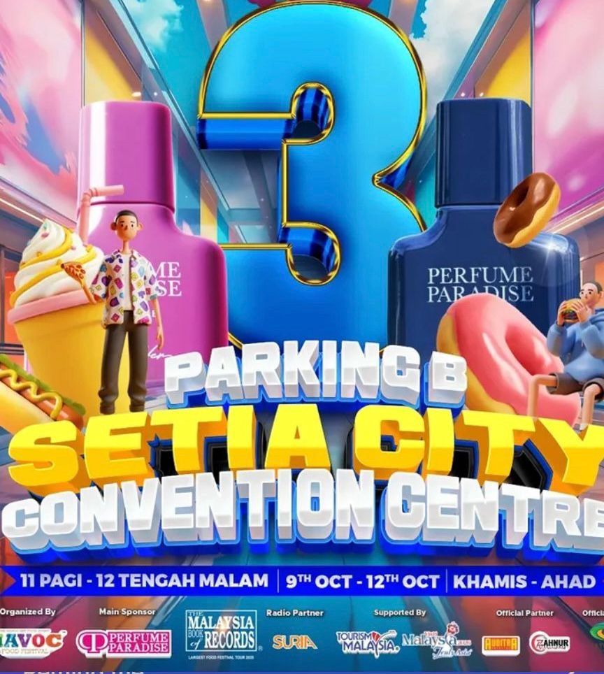

The Havoc Food Festival brings together local and international food brands in a fun, colourful environment at Setia City Convention Centre. Supported by Tourism Malaysia, it offers visitors food, music, and entertainment. The festival supports local businesses, attracts families and youth, and promotes Malaysia’s vibrant food culture and tourism industry.